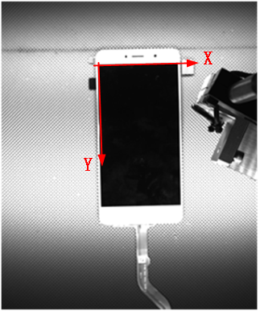
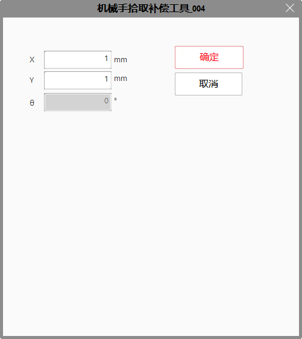

机械手拾取补偿工具适用于单点的补偿。机械手拾取应用中，假如定位的是整个屏幕，给出的坐标是屏幕的中心点坐标，实际拾取的时候需要靠下2mm，即产品坐标系Y轴正方向2mm，可以通过“机械手拾取补偿工具”增加Y轴方向的补偿实现；或者每次拾取都有固定的偏移，可以通过“机械手拾取补偿工具”将固定偏移补偿回来。

机械手拾取补偿工具仅支持在高级属性界面设置X方向和Y方向的补偿值，完成设置后会同步到工具的属性栏参数中。

| 分类 | 参数名称 | 参数描述 |
|---|---|---|
| 属性窗口 | 机械手拾取补偿类型 | 始终为产品坐标系。 |
| 对位补偿量 | 对位补偿值包括X,Y和旋转 | |
| X | “对位补偿值”中的X补偿值。 | |
| Y | “对位补偿值”中的Y补偿值。 | |
| Rotation | “对位补偿值”中的旋转角度。 | |
| 图像窗口 | 无 | 无 |
| 数据链 | 机械手坐标 | 机械手拾取位置坐标。 |
| 机械轴方向 | 机械手实际轴方向。 | |
| 高级界面 | 无 | 无 |
| 分类 | 参数名称 | 参数描述 |
|---|---|---|
| 监视窗口 | 补偿后机械手坐标 | 补偿后的机械手坐标。 |
| 执行结果 | 工具执行结果。 | |
| 执行时间 | 工具执行时间。 | |
| 图像窗口 | 执行结果 | 显示工具执行结果，执行成功显示“OK”，执行失败显示“NG”，同监视窗口的执行结果参数。 |
| 数据链 | 补偿后机械手坐标 | 输出补偿后的机械手坐标值，供其他工具使用，同监视窗口“补偿后机械手坐标”参数。 |
无
无
参见“\Samples\机械手拾取补偿工具.gvp”。